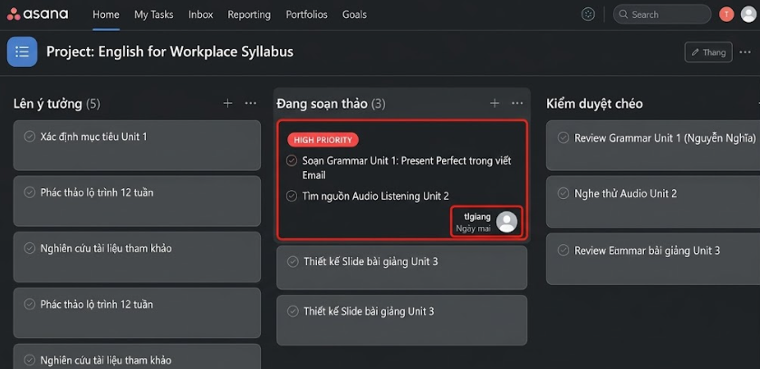
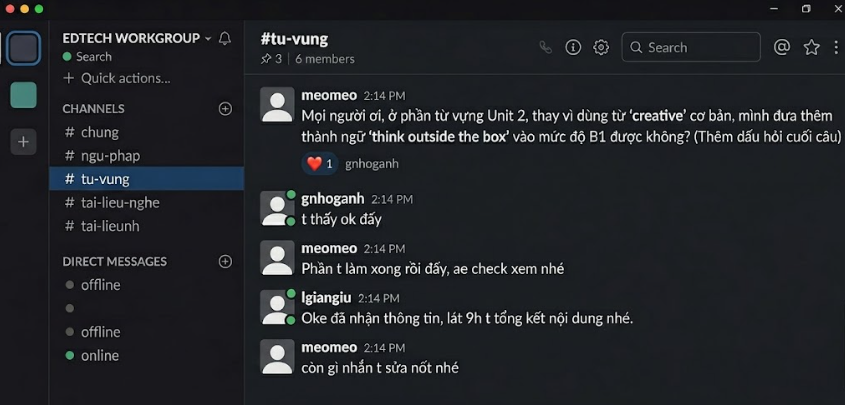

Trong bối cảnh giáo dục ngôn ngữ và công nghệ giáo dục (EdTech) ngày càng phát triển, việc ứng dụng các công cụ hợp tác trực tuyến không chỉ đơn thuần là để liên lạc mà đã trở thành nền tảng cốt lõi để xây dựng, thẩm định và quản lý hệ thống học liệu.
Trong học phần này, tôi đã tham gia vào một dự án nhóm nhỏ kéo dài 1 tuần với mục tiêu thiết kế trọn bộ giáo án chuẩn đầu ra A2-B1 với chủ đề "Tiếng Anh giao tiếp cho người đi làm". Các công cụ đã tích hợp:
1. Asana — Nhóm dùng Asana để số hóa quy trình thiết kế bài giảng với tính năng phân cấp công việc chi tiết. Bảng tiến độ được chia thành: "Lên ý tưởng (Brainstorming)" → "Đang soạn thảo (Drafting)" → "Kiểm duyệt chéo (Peer-Review)" → "Hoàn thiện (Done)". Tôi được phân công: nghiên cứu trích xuất tài liệu Reading & Listening, và soạn thảo phần Ngữ pháp cho Unit 1-3.
2. Google Drive — Khối lượng lớn học liệu ngoại ngữ được quản lý tập trung với cấu trúc phân tầng: Lý thuyết (Docs/PDF) và File nghe (MP3/Video MP4 hội thoại). Phân quyền truy cập nghiêm ngặt (chỉ xem / được chỉnh sửa).
3. Slack — Thiết lập kênh theo chủ điểm: #ngu-phap, #tu-vung, #tai-lieu-nghe, #thong-bao-chung. Tính năng Thread giúp thảo luận không loãng thông tin. Slack Huddle dùng cho giải thích phương pháp sư phạm phức tạp.
Hoàn thành nhiệm vụ soạn lý thuyết Unit 1-3 và sưu tầm, cắt ghép audio Listening của Unit 1-3. Kiểm soát và tổng hợp tài liệu, đảm bảo tiến độ của các thành viên, kiểm tra thành phẩm làm việc.
Ưu điểm:
Asana giúp trực quan hóa bức tranh tổng thể, đánh giá được khối lượng công việc đang dồn vào kỹ năng nào để điều phối kịp thời. Google Drive giải quyết triệt để bài toán lưu trữ file Audio chất lượng cao. Slack tạo môi trường làm việc chuyên nghiệp với tính năng Thread.
Nhược điểm:
Asana có giao diện và bộ lọc tương đối phức tạp, mất khoảng 2 ngày đầu để các thành viên quen. Slack có thể gây quá tải thông tin nếu không tùy chỉnh cài đặt thông báo.
Thách thức: Khó tìm nguồn tài liệu Nghe (Audio) gốc chuẩn bản xứ, không vi phạm bản quyền nhưng tốc độ nói phù hợp A2-B1. File bài tập nhỏ lẻ dễ bị lộn xộn.
Giải pháp: Giới hạn vùng tìm kiếm ở BBC Learning English, VOA, TED-Ed. Dùng Audacity chỉnh tốc độ file nghe chậm lại 10%. Tạo thư mục riêng cho từng Unit, sắp xếp theo thứ tự rõ ràng.
Ảnh phân chia nhiệm vụ trên Asana:

Tổng hợp và sắp xếp nội dung trên Drive:
Ảnh đoạn chat Slack thể hiện thảo luận:



Qua bài tập thực hành, tôi nhận thức sâu sắc rằng việc thành thạo các công cụ hợp tác trực tuyến không chỉ giúp tăng tốc độ hoàn thành công việc, mà còn là kỹ năng sư phạm thiết yếu trong thời đại giáo dục số. Việc ứng dụng Asana, Drive và Slack đã rèn luyện tư duy tổ chức thông tin mạch lạc, kỹ năng quản lý thời gian dự án, cách giao tiếp phản biện chuyên môn và khả năng phối hợp nhịp nhàng trong hội đồng học thuật.